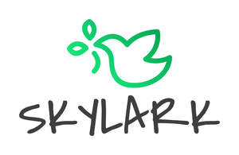

Trade Mark Journal No.2025/011 14 March 2025
UK00004165161 25 February 2025 (3,16,20,21,24)

- Class 3
- Cosmetic cotton wool; Make-up pads of cotton wool; Cotton wool balls for cosmetic use; Cotton wool buds for cosmetic use; Cotton wool for cosmetic purposes; Cotton wool in the form of wipes for cosmetic use; Cotton wool impregnated with make-up removing preparations; Pre-moistened cosmetic tissues; Tissues impregnated with a skin cleanser; Cosmetic-impregnated tissues; Perfumed tissues; Tissues impregnated with cosmetics; Impregnated paper tissues for cleaning dishware; Tissues impregnated with cosmetic lotions; Lotions (Tissues impregnated with cosmetic -); Tissues impregnated with preparations for cleaning; Tissues impregnated with make-up removing preparations; Cleaning preparations impregnated into tissues; Impregnated tissues for cleaning [non-medicated, for use on the person]; Tissues impregnated with essential oils, for cosmetic use; Tissues impregnated with leather gloss agents; Moist paper hand towels impregnated with a cosmetic lotion; Cotton swabs impregnated with make-up removing preparations; Cotton swabs for cosmetic purposes; Cotton buds for cosmetic purposes; Beauty serums; Beauty creams; Beauty lotions; Beauty care cosmetics; Beauty masks; Masks (Beauty -); Beauty soap; Beauty milk; Beauty gels; Beauty milks; Beauty creams for body care; Beauty balm creams; Facial beauty masks; Beauty preparations for the hair; Beauty care preparations; Distilled oils for beauty care; Beauty tonics for application to the face; Beauty masks for hands; Beauty serums with anti-ageing properties; Beauty tonics for application to the body; Natural cosmetics; Body cleaning and beauty care preparations; Non-medicated beauty preparations; Natural makeup; Skincare cosmetics; Natural perfumery; Body care cosmetics; Hair cosmetics; Body and facial creams [cosmetics]; Cosmetics; Skin care cosmetics; Colour cosmetics; Facial creams [cosmetics]; Colour cosmetics for the skin; Hair care creams [for cosmetic use]; Anti-aging moisturizers used as cosmetics; Cosmetic products in the form of aerosols for skincare; Colour cosmetics for the eyes; Body creams [cosmetics]; Cosmetics for eye-lashes; Natural oils for cosmetic purposes; Hair care lotions [for cosmetic use]; Organic cosmetics; Cosmetics for suntanning; Facial makeup; Decorative cosmetics; Cosmetic products in the form of aerosols for skin care; Sun care lotions [for cosmetic use]; Pot pourri; Kettle cleaner; Nail art stickers; Body art stickers; Cleaning sprays; Cleaning preparations; Washing soda, for cleaning; Carpet cleaning preparations; Cleaning fluids; Wiping cloth impregnated with a cleaning preparation for cleaning eye glasses; Cleaning preparations for cleansing drains; Cleaning foam; Preparation for cleaning dentures; Degreasers for cleaning purposes; Drain cleaning preparations; Cleaning chalk; Chalk (Cleaning -); Dry cleaning preparations; Laundry detergents for household cleaning use; Windscreen cleaning preparations; Oven cleaning preparations; Teeth cleaning (Preparations for -); Preparations for cleaning teeth; Cleaning preparations for the teeth; Preparations for cleaning the teeth; Car cleaning preparations; Dentures (Preparations for cleaning -); Cleaning dentures (Preparations for -); Preparations for cleaning dentures; Floor cleaning preparations; Ammonia for cleaning purposes; Cleaning and fragrancing preparations; Dry cleaning fluids; Glass cleaning preparations; Cloths impregnated with polishing preparations for cleaning; Automotive cleaning preparations; Wallpaper cleaning preparations; Tooth cleaning preparations; Foam cleaning preparations; Polish for furniture and flooring; Furniture polish; Furniture polishes; Furniture cleaner; Cleaner for cosmetic brushes.
- Class 16
- Tissue paper; Facial tissue; Tissues; Toilet tissue; Tissue papers; Bathroom tissue; Facial tissues of paper; Paper tissues; Tissues of paper; Toilet tissues; Coarse tissue [for toiletry use]; Toilet tissues of paper; Face tissues of paper; Toilet tissue made of paper; Tissues of paper for removing make-up; Paper tissues for cosmetic use; Bathroom tissues; Coarse tissue for toiletry use; Tissue paper for use as material of stencil paper (ganpishi); Tissue paper for making stencil paper; Onion skin paper; Covers of paper for flower pots; Advertising posters; Stickers; Advertising signs of cardboard; Advertising pamphlets; Advertising signs of paper; Printed advertising boards of cardboard; Stickers [stationery]; Advertising signs of paper or cardboard; Decorative stickers for cars; Bumper stickers; Printed advertising boards of paper; Adhesive stickers; Decorative stickers for helmets; Stickers [decalcomanias]; Printed advertisements; Advertising publications; Car stickers; Vehicle bumper stickers; Albums for stickers; Advertisement boards of cardboard; Advertisement boards of paper or cardboard; Display banners of paper; Pencil cups; Box files; Cardboard boxes; Boxes of cardboard; Cardboard gift boxes; Gift boxes; Packaging boxes of cardboard; Display boxes of cardboard; Hat boxes of cardboard; Cardboard cake boxes; Pencil boxes; Packaging boxes of card; Cardboard pizza boxes; Paper boxes; Boxes of paper; Collapsible cardboard boxes; Gift boxes made of cardboard; Pen boxes; Cat box liners in the form of plastic bags; Paper gift boxes; Boxes of cardboard or paper; Boxes of paper or cardboard; Corrugated boxes; Packaging boxes of paper; Boxes made of cardboard; Fiberboard boxes; Corrugated cardboard boxes; Cardboard packaging boxes in collapsible form; Stationery boxes; Hat boxes of paper; Collapsible boxes of paper; Cardboard household storage boxes; Party favor boxes of cardboard; Boxes for pens; Boxes made of paper; Brush pens; Eraser dusting brushes; Paint brushes; Writing brush washers; Writing brush hangers; Writing brush for Shodo; Writing brush washing saucers; Drawing brushes; Writing brush for calligraphy; Writing brush holders; Magnetic paint brush holder clips; Brushes for the application of paints; Bamboo rolls used as writing brush holders; Paint boxes and brushes; Brushes for decorators; Writing brushes; Writing brush calligraphy copybooks; Artists' paint brushes; Painters' brushes; Paint applicator rollers; Writing brushes for ground calligraphy; House painters' roller brushes.
- Class 20
- Flower pot stands; Stands for flower pots; Pedestals for plant pots; Pots of plastic for packaging; Advertising balloons; Advertising signboards of plastics; Advertising display boards; Advertising signboards of wood; Advertising display boards [furniture]; Advertising display boards of plastic [non-luminous]; Advertising display boards of porcelain [non-luminous]; Furniture; Furniture and furnishings; Upholstered furniture; Metal furniture and furniture for camping; Dressers [furniture]; Cushions [furniture]; Wooden furniture; Credenzas [furniture]; Furniture cabinets; Cabinets [furniture]; Patio furniture; Recliners [furniture]; Bentwood furniture; Pouffes [furniture]; Kitchen furniture; Washstands [furniture]; Bedroom furniture; Cupboards being furniture; Outdoor furniture; Nursery furniture; Drawers for furniture; Benches [furniture]; Household furniture; Garden furniture; Bathroom furniture; Lawn furniture; Furniture shelves; Shelves [furniture]; Desks [furniture]; Panelling for furniture; Furniture for kitchens; Kitchen dressers [furniture]; Leather furniture; Wooden shelving [furniture]; Slatted furniture; Stationery cabinets [furniture]; Chairs being office furniture; Shop furniture; Tables [furniture]; Seating furniture; Furniture moldings; Office furniture; Furniture (Office -); Indoor furniture; Furniture for bathrooms; Consignment shelving [furniture]; Lounge furniture; Bamboo furniture; Furniture for storage; Storage furniture; Furniture of metal; Metal furniture; Furniture racks; Racks [furniture]; Furniture partitions; Trolleys [furniture]; Furniture parts; Furniture frames; Arbours [furniture]; Furniture chests; Pet furniture; Lockers [furniture]; Pedestals [furniture]; Furniture partitions of wood; Partitions of wood for furniture; Furniture (Partitions of wood for -); Consoles [furniture]; Antique style furniture; Furniture for offices; Furniture for vivariums; Furniture for shops; Transformable furniture; Doors for furniture; Furniture doors; Stackable furniture; Furniture for washrooms; Mirrors [furniture]; Furniture for conservatories; Glass furniture; Trestles [furniture]; Metal cabinets [furniture]; Inflatable furniture; Furniture (Inflatable -); Wooden racks [furniture]; Garden furniture manufactured from wood; Fireguards [furniture]; Furniture for children; Metal shelving [furniture]; Seats [furniture]; Furniture for caravans; Joints for furniture; Modular bathroom furniture; Computer furniture; Shelves being nursery furniture; Furniture for camping; Furniture for saunas; Legs for furniture; Camping furniture; Drawers [furniture parts]; Drawers as furniture parts; Domestic furniture; Cane furniture; Screens [furniture]; Furniture screens; Countertops [furniture parts]; Furniture for babies; Metal office furniture; Storage racks; Shelves for storage; Storage racks for firewood; Cabinets for storage purposes; Storage units [furniture]; Storage drawers [furniture]; Storage modules [furniture]; Storage cabinets [furniture]; Storage cupboards [furniture]; Storage shelves [furniture]; Drawer storage for cards; Metal storage cabinets; Storage baskets [furniture]; Storage boxes [furniture]; Storage racks for storing works of art; Mobile storage racks [furniture]; Wood storage tanks; Storage units for cupboard conversions; Plastic storage tanks; Non-metallic racks [furniture] for use in storage; Non-metallic storage racks [furniture]; Plastic suction cups; Non-metal cup hooks; Empty coffee capsules of plastic; Screw cups, not of metal; Prize cups of wood, wax, plaster or plastic; Box shelves; Box springs; Wooden boxes; Plastic boxes; Letter boxes of plastic; Tool boxes [furniture]; Mail boxes, not of metal; Tool boxes (non-metallic -) [empty]; Wooden storage boxes; Toy boxes [chests]; Toy boxes and chests; Nesting boxes; Boxes (Nesting -); Plastic boxes for packing; Plastic inserts [trays] for tool boxes; Tool boxes, not of metal, empty; Boxes (packaging -) in flat form [plastic]; Letter boxes of wood; Stacking boxes of plastic; Letter boxes, non-metallic; Boxes of wood; Wood boxes; Boxes made of plastic; Toy boxes [furniture]; Boxes (packaging -) in collapsible form [plastic]; Tool boxes, not of metal; Boxes (packaging -) in collapsible form [wood]; Locker boxes [furniture]; Letter boxes [not of metal]; Brush mountings.
- Class 21
- Cleaning cotton; Cotton ball dispensers; Cotton ball jars; Cotton waste for cleaning; Cotton gloves for household purposes; Dispensers for facial tissues; Toilet tissue holders; Tissue box covers; Covers for tissue boxes; Ceramic tissue box covers; Body sponges; Cosmetic, hygiene and beauty care utensils; Pot pourri jars; Containers for pot pourri; Pot lids; Pot holders; Flower pot holders; Pot lid racks; Pot scrapers; Pot stands; Cooking pot sets; Pots; Coffee pots; Tea pots; Closures for pot lids; Flower pots; Pots (Flower -); Pot plant support sticks; Incense pots; Porcelain flower pots; Earthen pots; Cooking pots; Saucers for flower pots; Plant pots; Pepper pots; Glass pots; Paper cooking pots; Mustard pots; Pot cleaning brushes; Chamber pots; Jam pots; Pots for flowers; Pots for plants; Stone pots; Plastic lids for plant pots; Shaving pots; Coffee pots [non-electric]; Non-electric coffee pots; Serving pots; Tea pots of precious metal; Cookware [pots and pans]; Hot pots, non-electric; Cooking pots for use in microwave ovens; Non-electric rice cooking pots; Cooking pots and pans [non-electric]; Non-electric cooking pots and pans; Couscous cooking pots, non-electric; Coffee pots not of precious metal; Cooking pots [non-electric]; Covers, not of paper, for flower pots; Bases for plant pots; Cooking pots, non-electric / Non-electric cooking pots; Portable pots and pans for camping; Non electric coffee pots not of precious metal; Prize cups of porcelain, ceramic, earthenware, terra-cotta or glass; Flower bowls; Hot pots, not electrically heated; Hot pots [not electrically heated]; Frying pan lids; Soup bowls; Chip pan baskets; Saucepans (Earthenware -); Earthenware saucepans; Earthenware mugs; Saucepan lids; Plates to prevent milk boiling over; Roaster pans; Tea cups; Earthenware jars; Ceramic mugs; Saucepan scourers of metal; Japanese style tea-serving pots (kyusu); Coffee mugs; Soup tureens; Simmer rings [cooking utensils]; Planters of earthenware; Coffee stirrers; Japanese style tea-serving pots of precious metal (kyusu); Commemorative statuary cups of porcelain, ceramic, earthenware, terra-cotta or glass; Coffee cups; Busts of porcelain, ceramic, earthenware, terra-cotta or glass; Ritual flower vases; Non-electric coffee drippers for brewing coffee; Japanese-style soup bowls [wan]; Drinking mugs made of porcelain; Cups made of earthenware; Roasting pans; Jars for cooking grease, empty; Utensil jars; Busts of porcelain, ceramic, earthenware or glass; Brushes for cleaning; Cleaning brushes; Cloths for cleaning; Cleaning cloths; Cleaning cloth; Cleaning sponges; Cleaning rags; Rags for cleaning; Pads for cleaning; Cleaning pads; Cleaning combs; Cleaning tow; Cleaning leathers; Cleaning articles; Cloths for cleaning purposes; Brushes for cleaning footwear; Microfiber cloths for cleaning; Buckskin for cleaning; Brooms for cleaning purposes; Bottle cleaning brushes; Storage jars; Storage tins; Food storage containers; Cup holders; Cups; Cup lids; Sippy cups; Glass cups; Liqueur cups; Cups and mugs; Drinking cups; Egg cups; Cups (Egg -); Plastic cups; Sake cups; Fruit cups; Cups (Fruit -); Compostable cups; Paper cups; Cardboard cups; Insulating sleeve holder for beverage cups; Mixing cups; Feeding cups; Biodegradable cups; Cupcake baking cups; Silicone baking cups; Paper baking cups; Baking cups of paper; Cups of paper or plastic; Cups made of china; Demitasse sets comprised of cups and saucers; Egg cups of precious metal; Double wall cups; Coffee scoops; Cups of precious metal; Cups made of pottery; Drinking cups [not of precious metal]; Egg cups, not of precious metal; Tea bag rests; Training cups for babies; Biodegradable paper pulp-based cups; Tea strainers; Foam drink holders; Cups, not of precious metal; Sake cups [not of precious metal]; Tea balls; Training cups for infants; Pint glasses; Cups made of plastics; Drinking glass holders; Suction bowls; Tea infusers; Feeding cups for children; Window boxes; Bento boxes; Plastic juice box holders; Soap boxes; Boxes (Soap -); Candy boxes; Boxes of glass; Sandwich boxes; Juice box holders made of plastic; Boxes for candies; Lunch boxes; Boxes for biscuits; Bread boxes; Boxes of china; Boxes of porcelain; Enamelled boxes; Boxes for sweets; Enamel boxes; Cool boxes; Brushes; Brush holders; Shaving brush holders; Scrubbing brushes; Shaving brush stands; Dusting brushes; Brushes (except paint brushes); Eyeliner brushes; Toilet brush sets; Basting brushes; Mascara brushes; Mopping brushes; Brush goods; Tongue brushes; Hair brushes; Lint brushes; Nail brushes; Tongue cleaning brushes; Interdental brushes; Hair for brushes; Tooth brush cases; Pastry brushes; Shaving brushes; Tooth brushes; Horsehair for brushes; Toothbrush bristles; Eyelash brushes; Lip brushes; Crumb brushes; Shampoo brushes; Mane brushes; Scraping brushes; Washing brushes; Toilet brush holders; Exfoliating brushes; Mushroom brushes; Interdental brushes for cleaning the teeth; Eyebrow brushes; Bottle brushes; Lawn brushes; Make-up brushes; Toilet brushes; Shaving brushes of badger hair; Washing-up brushes; Fireplace brushes; Dish brushes; Lavatory brush stands; Tub brushes; Bathtub brushes; Carpet-cleaning brushes; Tooth brushes, non-electric; Brushes (except paintbrushes); Brushes, except paintbrushes; Hair color application brushes; Bath brushes; Electric tooth brushes; Dishwashing brushes; Brushes (Dishwashing -); Cake brushes; Brushes for washing up; Skin cleansing brushes; Hair tinting brushes; Brush making materials; Handles for brushes; Denture brushes; Lavatory brushes; Horse brushes; Brushes for basting meat; Holders for shaving brushes; Electric rotating hair brushes; Cattle hair for brushes; Stands for shaving brushes; Floor brushes; Window groove cleaning brushes; Lamp-glass brushes; Stands for tooth brushes; Boot brushes; Shoe brushes; Water closet brush holders; Blacking brushes; Raccoon dog hair for brushes; Cosmetics brushes; Brushes for use on tree bark; Horse brushes of wire; Feeding bottle brushes; Cosmetic brushes; Ski wax brushes; Cleaning brushes for teapot spouts; Brushes for household use; File brushes; Holders for brushes; Clothes brushes; Ship-scrubbing brushes; Golf brushes; Brushes for cleaning cars; Deshedding brushes for pets; Mane brushes [horse combs]; Automobile wheel cleaning brushes; Brushes for grooming horses; Handles (Non-metallic -) for brushes; Brushes for pets; Brushes for pipes; Cleaning brushes for feeding bottles; Electric pet brushes.
- Class 24
- Cotton fabric; Cotton fabrics; Cotton cloths; Cotton blankets; Cotton knitted fabric; Textiles made of cotton; Knitted fabrics of cotton yarn; Fabrics made from cotton, other than for insulation; Cotton base mixed fabrics; Textile piece goods made of cotton; Polyester textiles; Polyester fabric; Bed blankets made of cotton; Japanese cotton towels (tenugui); Woven silk fabrics; Woolen fabric; Silk fabrics; Woollen fabric; Rayon fabric; Silk cloth; Silk [cloth]; Viscose textiles; Linen [fabric]; Hemp fabric; Woven linen fabrics; Wool yarn fabrics; Spun silk fabrics; Hemp yarn fabrics; Flannel [fabric]; Terry linen; Knitted fabrics of silk yarn; Jute fabric; Nylon fabric; Silk blankets; Covered rubber yarn fabrics [for textile use]; Woollen fabrics; Denim [cloth]; Jute fabrics; Textile fabric; Knitted fabrics of wool yarn; Woolen cloth; Towelling [textile]; Hemp cloth; Denim fabric; Rubberized textile fabrics; Linen cloth; Fleece made from polyester; Wool loop knit fabrics; Gauze fabric; Woollen cloth; Chenille fabric; Textiles made of flannel; Textiles made of wool; Jute cloth; Textile fabrics for use in the manufacture of pillowcases; Textile tissues; Tissues being textile piece goods; Cloths of non-woven textile material for washing the body [other than for medical use]; Non-woven fabrics of natural fibres; Non-woven fabrics of synthetic fibres; Cloths of woven textile material for washing the body [other than for medical use]; Silk fabric for printing patterns; Regenerated fiber yarn fabrics; Synthetic fiber fabric; Paper yarn fabrics for textile use; Fabrics of organic fibres, other than for insulation; Coverings for furniture; Fabrics for manufacturing garden furniture; Furniture coverings of textile; Coverings (Furniture -) of textile; Coverings of plastics for furniture.
Skylark International Trading LTD